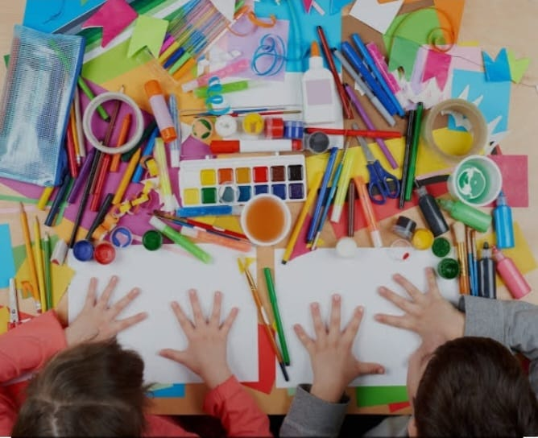

Materiais
- 
Tenho a certeza que os idiomas abrem as portas para maravilhosas possivilidades. Por isso eu quero ofrecer oportunidades a criancas e jóvens para estar melhor preparados para o futuro. No mundo globalizado em que vivemos é preciso conhecer de outras culturas e conseguir se comunicar para obter sucesso nos nossos projetos. Minha vida mudou, tendo sido criada no interior do país mas com a bencao de poder conhecer outras culturas. Entendo o difícil que é iniciar de cero um idioma e por isso estou desenvolvendo uma manera lúdica de ensinar e preparar para o futuro.
Professora trilíngue, certificada TEFL (Ensino de ingles como lengua secundária) pela Universidade Brigham Young Idaho, dos Estados Unidos. Tenho experiência lecionando para todas as idades, a distância e presencial. Morei no exterior em dois países com idiomas diferentes do meu nativo, o que me ajudou a entender as necessidades dos meus alunos. Implementei um método orgânico, com uma abordagem natural a uma nova linguagem o que os ajudou a manter o interesse, alcançando bons resultados.
Media